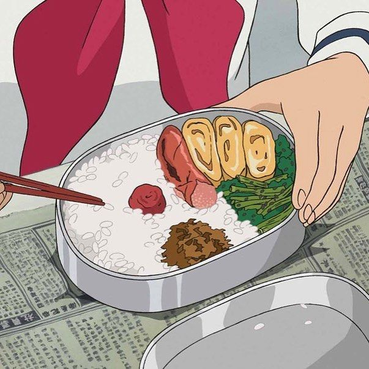

Inspired by Ghibli’s quiet mornings and older sisters saving the day 🍱
When mom’s away and dad deserves to sleep in, sometimes it’s a big sister’s job to make lunch for everyone. This iconic bento includes grilled sardine, edamame beans, homemade sakura denbu, and umeboshi served on aromatic jasmine rice. Yield: 1 serving Prep time: 10 minutes Cook time: 35 minutes
Ingredients (Sakura Denbu)
1 (3.5-ounce) hake fillet, sea cod, or white fish
2 ½ cups + 1 tbsp water
1 drop red food coloring
½ tbsp sugar
1 tbsp sake
¼ tsp salt
Ingredients (Bento)
½ cup frozen edamame beans, shelled
2 ½ cups boiling water
1 whole sardine, scaled and cleaned
Salt and pepper, to taste
1 tbsp olive oil
1 cup cooked jasmine rice
1 umeboshi (pickled plum)

Carefully packed with love, just like in Ghibli films 🍙
Instructions
To make the sakura denbu: Remove the skin and bones from the fish fillet.
Fill a medium pot with 2 ½ cups water and bring to a boil.
Add the fish fillet to the pot and poach for 10 minutes, or until it is white and flaky.
Drain the fish fillet and let it cool completely.
Once it is cool enough to handle, gently flake the fillet with your hands. Wrap the cooked fish fillet in a cheesecloth and squeeze out any remaining liquid from the fish. While it is in the cheesecloth, flake the fish into even finer pieces with your hands. Set aside.
In a separate small bowl, combine the red food coloring and 1 tablespoon of water and set aside.
Place the flaked fish in a medium nonstick frying pan over low heat. Add the sugar, sake, salt and red food coloring mixture to the pan and stir continuously for 5 to 10 minutes—the mixture has a tendency to burn easily.
Once the mixture is fluffy, remove the pan from the heat and continue to stir the mixture for another minute. Set the mixture aside and let it cool.
For the bento: Place the edamame in a pot of boiling water and let it cook for 7 minutes, or until tender. Drain and set aside.
While the edamame is cooking, season the sardine with salt and pepper on both sides. Lightly drizzle olive oil over the fish and bake it in the oven or grill it on a barbecue grill for 5 to 7 minutes until it is fully cooked.
To assemble your bento box, fill three quarters of your bento box with cooked jasmine rice, ensuring that the rice covers the bottom of the box.
Place the grilled sardine on top of the rice in the middle of your bento (creating a division between your other rice condiments).
On the left-hand side of your bento box, fill one quarter of the bento box with the cooked edamame beans and the other quarter with the sakura denbu. Finally, place 1 umeboshi on top of the rice on the right-hand side of your bento box.
Tips
Traditionally, sakura denbu is cooked codfish that has been flaked and lightly seasoned with sugar. Colored pink to represent the cherry blossom petals in Japan, it’s favorite condiment for rice.
In the original film, shishamo, or smelt fish, is used. However, sardine is a great alternative and more accessible.